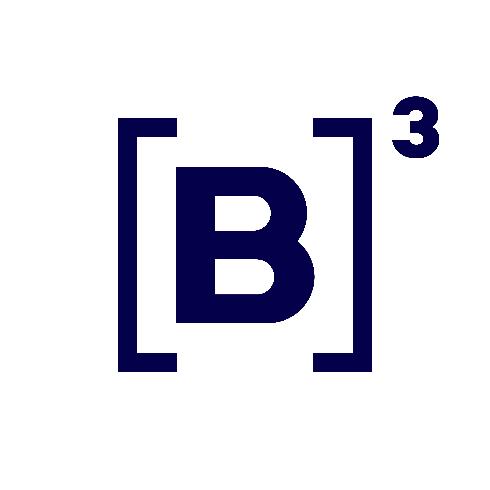
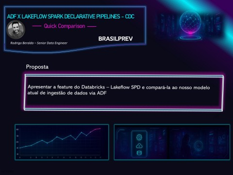
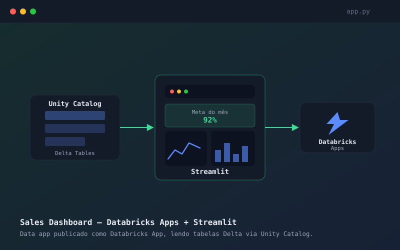
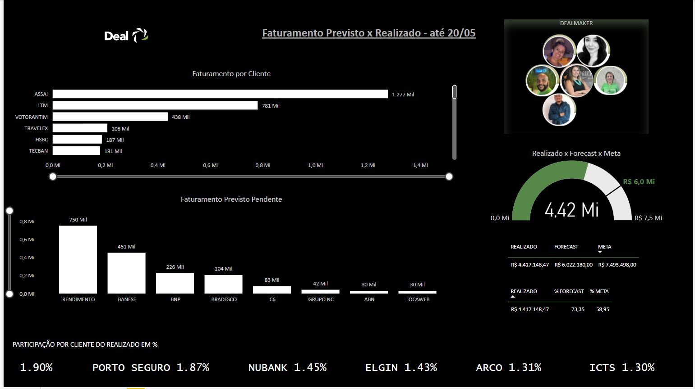
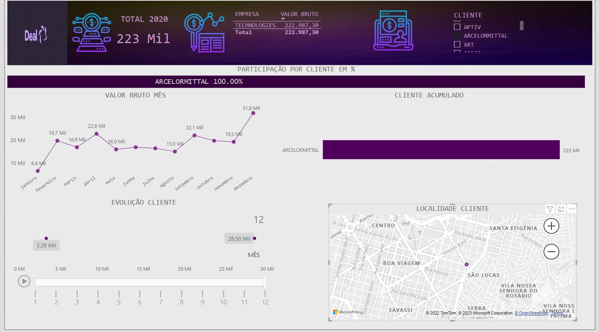
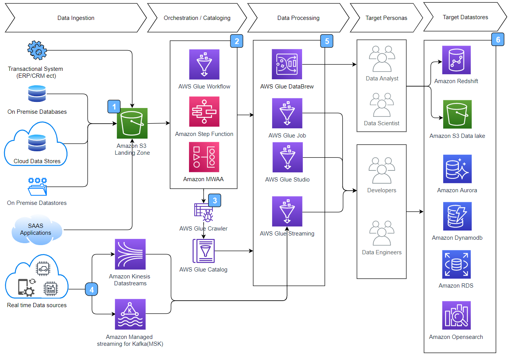
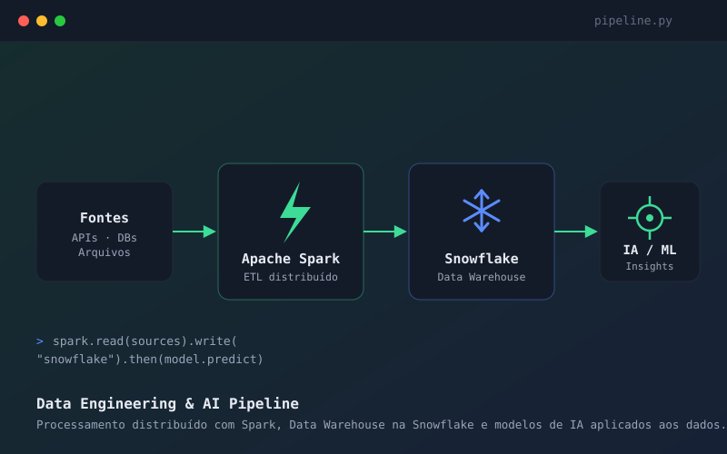
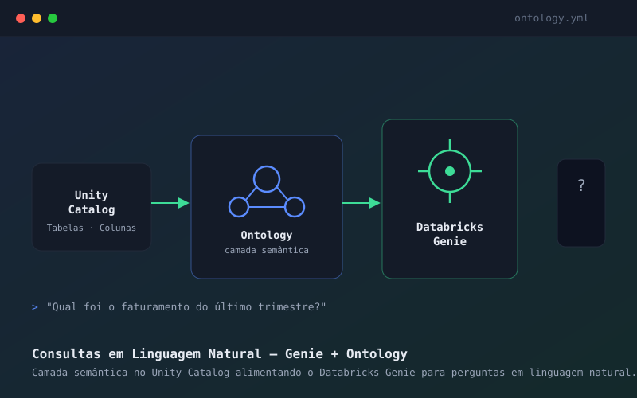
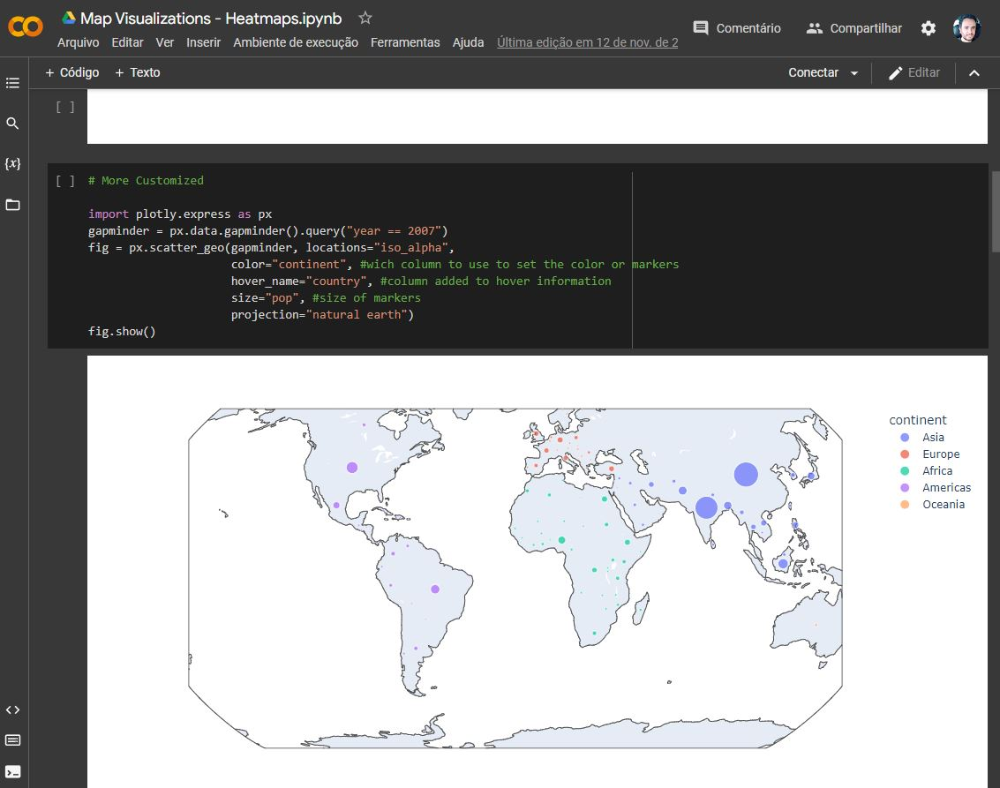
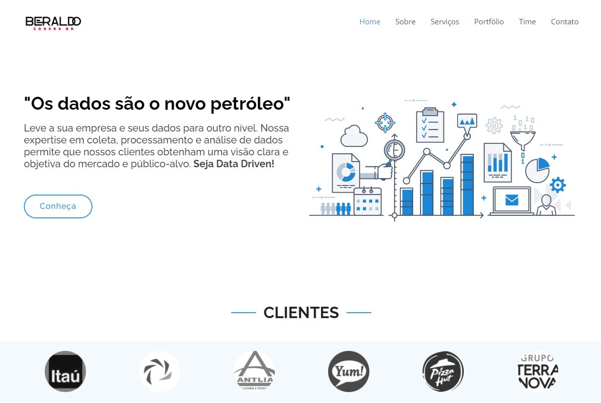

Engenheiro de Dados Sênior · São Paulo, Brasil
Rodrigo Beraldo
>
Ajudo empresas a evoluir plataformas de dados legadas para arquiteturas modernas, escaláveis e prontas para IA — conectando as necessidades do negócio a soluções sustentáveis, do primeiro Data Lake ao Lakehouse.
Sobre mim
Dados, código e uma paixão por resolver problemas
// pipeline de dados montando o perfil
- NomeRodrigo C. Beraldo
- AtuaçãoEspecialista em Engenharia de Dados
- LocalSão Paulo, SP
- Emailrodrigo.beraldo26@gmail.com
- Telefone+55 (11) 99426-2962
Sobre mim
Sou especialista em Engenharia de Dados e gosto de resolver o problema por trás do problema: entender como o negócio realmente usa os dados para então desenhar arquiteturas simples de manter, fáceis de confiar e prontas para crescer — em vez de simplesmente trocar uma tecnologia por outra.
Ao longo da minha trajetória, liderei a modernização de plataformas de dados em bancos, seguradoras e empresas de tecnologia: migrei processos legados para arquiteturas Lakehouse, reduzi a latência de dados de horas para segundos com streaming e CDC, e criei produtos de dados que aproximam times de negócio e de tecnologia. Mais recentemente, também tenho aplicado Inteligência Artificial à própria Engenharia de Dados, acelerando desenvolvimento, documentação e tomada de decisão.
Como eu entrego valor
Tecnologias que uso
Formação
- Em andamentoPós-graduação em Matemática Aplicada à Computação — Anhanguera
- 2021MBA em Big Data e Business Intelligence — Escola de Negócios Europeia de Barcelona
- 2021Licenciatura em Matemática — Universidade Cruzeiro do Sul
- 2012Economia e Finanças — Universidade Paulista
Idiomas
Experiência
Minha trajetória
8+ anos resolvendo problemas de dados em bancos, seguradoras, fintechs e empresas de tecnologia.

B3 S.A. — Engenheiro de Dados Sênior
Atual · Ago 2026Lidero a arquitetura e modernização da plataforma de dados da bolsa brasileira, migrando soluções legadas — SQL Server, procedures, fluxos Alteryx e processamento de arquivos — para uma arquitetura Lakehouse no Databricks, avaliando não só a conversão tecnológica dos workloads, mas também a adequação das regras de negócio ao novo ambiente. Atuo como referência técnica do time, definindo padrões arquiteturais e componentes reutilizáveis para acelerar a migração de novos workloads.
Brasilprev — Engenheiro de Dados Sênior
Mar 2025 – Ago 2026Liderei a modernização da ingestão de dados, evoluindo de Azure Data Factory para Databricks Lakeflow Connect, com Kafka como motor de streaming e CDC em tempo real — reduzindo a latência dos dados e melhorando os SLAs para os consumidores analíticos. Idealizei e construí o catálogo corporativo de dados com Databricks Apps e IA integrada para orientar os usuários, apliquei modelagem Data Vault para reforçar governança e privacidade, e implantei observabilidade com Datadog e Grafana para detectar falhas antes que virassem incidentes.
iFood — Engenheiro de Dados Sênior
Nov 2024 – Mar 2025Otimizei pipelines e queries PySpark no Databricks, rodando em Azure e AWS, reduzindo o tempo de processamento e a complexidade para o usuário final. Revisei arquiteturas legadas para construir novos produtos de dados, integrei serviços com AWS SNS/SQS para mensageria assíncrona, automatizei infraestrutura com Terraform e implementei testes automatizados (pytest/unittest) para aumentar a confiabilidade das entregas.
Santander – Getnet — Engenheiro de Dados
Out 2023 – Nov 2024Participei ativamente da construção do primeiro Data Lake da companhia, migrando dados on-premise para a nuvem com Azure Blob Storage, Azure Data Factory, Databricks e Snowflake. Integrei fontes diversas — Oracle, SQL Server, MongoDB, APIs e dados quase em tempo real (NRT) — garantindo integridade e alta disponibilidade, e desenvolvi uma plataforma de BI self-service com conceitos de Data Mesh, dando autonomia aos times de negócio para explorar os dados sem depender de filas de TI.
Banco Itaú — Engenheiro de Dados
Set 2022 – Out 2023Migrei a camada de dados local para a nuvem AWS (S3, Redshift, Glue) e construí, do zero, o sistema de NPS e Precificação já nativo na nuvem, consumindo microsserviços em tempo real — resultado que elevou de forma consistente o NPS da área. Participei do projeto de migração On-Premise → AWS e criei sistemas de captação de dados com Python, Knime, Alteryx e Pentaho, padronizando as informações para os Data Warehouses da empresa.
Antlia Tecnologia — Analista de Dados
Jul 2021 – Ago 2022Atuei em fábrica de software tratando dados de clientes do setor bancário: transformação de bases vindas de SQL Server e SAS, criação de Stored Procedures, views e joins para consultas de alta performance, e cargas de ETL com SSIS — sempre dentro de um ritmo ágil de entregas contínuas.
Deal Technologies — Analista de Dados Financeiros
Set 2020 – Jun 2021Extraí, limpei e modelei dados financeiros para criar visualizações que facilitassem a análise, automatizei rotinas manuais com RPA e Python, e construí dashboards interativos em Power BI que davam às equipes insights rápidos e acionáveis sobre faturamento e indicadores financeiros.
Outros clientes atendidos via Beraldo Coders BR
Portfólio
Projetos em destaque
Uma seleção de dashboards, pipelines e automações implementados em clientes.

Lakeflow Declarative Pipelines vs. ADF — Brasilprev
Comparativo entre o Databricks Lakeflow (Delta Live Tables) e o modelo atual de ingestão via Azure Data Factory, com streaming Kafka e réplica automática entre as camadas bronze e silver.
{kind=link}

Dashboard de Vendas — Databricks Apps + Streamlit
Data app interativo publicado como Databricks App, com Streamlit consumindo tabelas Delta via Unity Catalog para acompanhar metas, ticket médio e performance em tempo real.

Dashboard de Faturamento — Deal Technologies
Faturamento previsto x realizado, forecast e metas por cliente.

Dashboard de Billing — Deal Technologies
Acompanhamento de valor bruto mensal e localização de clientes.
{kind=link}

Arquitetura de Data Pipeline — AWS
Ingestão, orquestração e processamento de dados de ponta a ponta na nuvem.
{kind=link}

Data Engineering & IA — Spark + Snowflake
Processamento distribuído de grandes volumes de dados com Apache Spark, carga em Data Warehouse na Snowflake e aplicação de modelos de IA para gerar insights a partir dos dados.
{kind=link}

Consultas em Linguagem Natural — Genie + Ontology
Modelagem de uma camada semântica (Ontology) no Unity Catalog para alimentar o Databricks Genie, permitindo que áreas de negócio façam perguntas em linguagem natural e recebam respostas confiáveis, sem escrever SQL.
{kind=link}

Visualização de Dados — Python
Notebooks com Plotly para mapas e análises exploratórias interativas.

Sites Personalizados — Beraldo Coders BR
Desenvolvimento de sites institucionais sob medida para clientes.
Fora do código
O que me inspira fora do trabalho
Correr, ler e tocar guitarra são o meu contraponto ao teclado — energia que eu trago de volta para resolver problemas de dados.
{kind=link}
{kind=link}
{kind=link}
Sempre um livro técnico na mesa
Gosto de me manter atualizado com o que há de mais recente em IA e engenharia de dados — de LLMs a arquiteturas de produção.
{kind=link}
Correndo pelas ruas de São Paulo
Participo de corridas de rua pela cidade — a disciplina da corrida lembra a de um bom pipeline de dados: constância importa mais que velocidade.
{kind=link}
Contato
Vamos conversar sobre o seu próximo projeto?
Entre em contato
Precisa de mais detalhes? Envie a sua mensagem que logo entrarei em contato.
- rodrigo.beraldo26@gmail.com
- +55 (11) 99426-2962
Envie uma mensagem
Conte um pouco sobre o seu projeto e eu retorno o mais rápido possível.